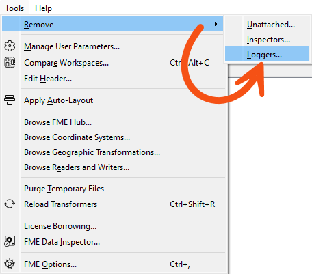

There are always exceptions to any rule, and you may disagree with some of the content below. However, you should try as much as possible to remove any functionality used for debugging before putting a workspace into production.
After completing this lesson, you’ll be able to:
Workspaces are authored in FME Workbench and often run in FME Workbench. However, wherever a workspace is run, the production version should look quite different from when it was authored.
That's because when authors build and test a workspace, they use several features designed to help them create and debug. However, these features often slow the translation, so avoiding them in a production-ready workspace is essential.
Many of these features don't appear to hinder performance during workspace development because development usually occurs on a small subset of data. However, scaling up to production levels of data also scales up the impact on performance.
In short, it's essential to think of development and production as two entirely different stages and design workspaces appropriately for each stage.
There are always exceptions to any rule, and you may disagree with some of the content below. However, you should try as much as possible to remove any functionality used for debugging before putting a workspace into production.
Logger and Inspector transformers are commonly used to inspect data during authoring.
The Logger writes information to the log file, while the Inspector sends data to the FME Data Inspector. Both should be avoided in a production workflow for two reasons. First, such inspection techniques are only sometimes needed in a production workflow, and second, both will reduce performance. The Inspector, in particular, can use many system resources to send data to the Data Inspector.
All Logger and Inspector transformers can be removed in one action by using Tools > Remove... > Inspectors or Loggers in the menu bar:

There is a more pressing need to remove these transformers from a workspace run in FME Form. When run on FME Flow, the Inspector transformers will be ignored, as there is no visualization tool on that platform.
Running a workspace with Feature Caching enabled takes a huge performance hit because each transformer caches data. It is, again, a debugging tool, so it is best to turn this feature off when authoring and testing are complete and the workspace is put into production. This is so important that the log window even records when feature caching is turned on:

If feature caching was used to aid feature inspection, it should not be required in a production workflow. If feature caching was used for a partial run, only the required section of the workspace should be put into production.
As with Inspector transformers, feature caching does not affect a workspace run on FME Flow. Additionally, feature caching being enabled or disabled is not stored in the workspace file itself; the user controls it via the Workbench Run menu.
In some cases, parts of a workspace are disabled—or separated from the main workflow by a disabled connection—to test specific sections. This is different from what should be maintained in a production workspace.
If the components were disabled for testing only, they should be activated for production work. If the components are not needed now, consider storing them in a separate workspace or saving a separate workspace version without them.
If parts of a workspace are unnecessary, why not use a user parameter to divert data? In software development, these are called Feature Flags, and this blog by an FME user explains how to implement them in a workspace.